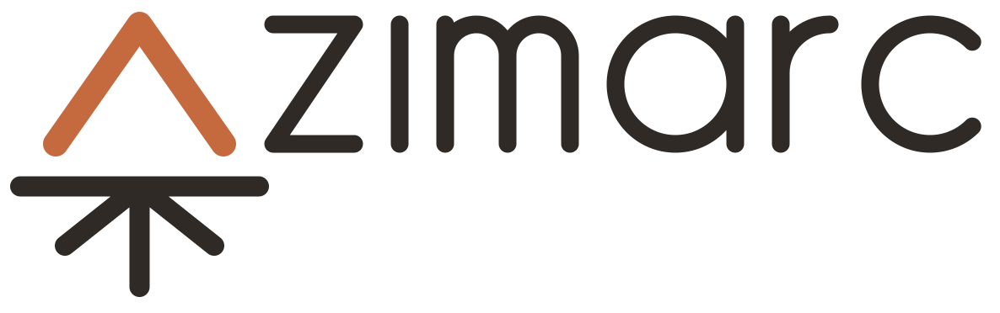

Life, built daily.
Azimarc starts with what you want out of life (a degree, a promotion, a marathon, a calmer home) and turns it into a plan you can actually live, one day at a time.
Sound familiar?
You’re busy every day, yet the things you care about most never seem to move. To-do lists hold everything and prioritize nothing. Calendars show you when, never why.
Azimarc puts your goals first, so each day is built from what matters to you, and you can see it working.
How it feels
Decide what matters
Write down the big things, then break each into milestones and steps, as deep as you like, until the next step is obvious.
Plan the way you would on paper
Each month, each week, each morning: pull work from your goals into the time ahead. What you don’t finish goes back to the plan instead of quietly piling up.
Open Today and know why
Your tasks sit beside the day’s timeline, each one tied to the goal it serves, so one glance tells you whether today moves you forward.
Keep the habits that keep you going
Run three times a week, read every evening. Give a habit a rhythm and Azimarc counts the reps, so each week you know where you stand.
Notes that stay where they belong
Keep notebooks and quick notes, or attach a note to a goal, a task or a day. Everything is searchable.
Watch it add up
Progress rolls up from every step to the goal above it, so finishing a small task visibly moves the big picture.
Made for full lives
Azimarc is for anyone who wants more out of life than a to-do list can hold: students balancing classes with everything else, professionals making room for the personal goals that get crowded out, parents keeping a household moving, and anyone training, learning or building something on the side.
Availability
Azimarc is in private development and available to invited testers as a web app. Apps for iPhone and Android, and sync with popular calendars, are planned.
Support
Questions or problems? Email support@arxwright.com or see the support page. Azimarc is made by Arxwright LLC.